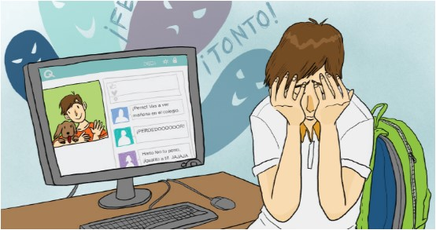

Investigaciones sobre el uso de TIC en jóvenes dan muestra de que más allá de los beneficios existen usos problemáticos que se desarrollan desde los ámbitos personal y escolar, comportamientos como: desperdiciar el tiempo de aprendizaje, copiar y compartir tareas de otros compañeros, distraerse y distraer a otros durante la clase, molestar a otros y hasta compartir imágenes sin consentimiento son algunos de estos aspectos a tener en cuenta.
El mal uso de las TIC:
En jóvenes, puede conllevar otros problemas de salud (físicos y psicológicos) y puede afectar el rendimiento escolar de los estudiantes.
Problemas de salud: Una larga exposición a los pequeños dispositivos con pantallas (teléfono inteligente, tableta, laptop) puede afectar al sistema músculo-esquelético debido a la inclinación del cuello durante su uso. Los que tienen ese problema postural, conocido como text neck (o tech neck), pueden padecer dolores cervicales y cefaleas y además pueden sufrir tensiones dorsales o a nivel de los hombros.
Problemas psicológicos: Un análisis sistemático sobre los efectos psicopatológicos (Elhai y cols., 2017), demuestra que la adicción al teléfono móvil se relaciona con la ansiedad, el estrés y la depresión. Pudiendo tener relaciones también con una baja autoestima de los jóvenes.
Bajo rendimiento escolar: También se ha visto que los jóvenes que experimentan una mayor adicción a las TIC duermen menos y tienen un peor rendimiento escolar en comparación con los jóvenes que hacen un uso moderado de las TIC.
El uso de las TIC también aumenta la probabilidad de sufrir ciberataques, que son ataques informáticos que amenazan la privacidad y la información que contienen las computadoras. Los ataques son cada vez más avanzados e involucran a piratas informáticos de diferentes países con motivaciones financieras o militares.